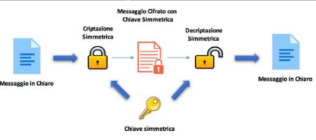
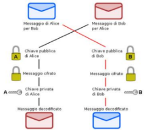

🔐 DEFINIZIONE
La crittografia è la scienza che studia i metodi per rendere sicura e riservata la comunicazione tra due soggetti. Il termine significa scrittura segreta e indica l’insieme di tecniche utilizzate per proteggere il contenuto di un messaggio da occhi indesiderati.
🔒 PROPRIETÀ DELLA CRITTOGRAFIA
- Segretezza: il messaggio non deve essere comprensibile da terzi.
- Autenticazione: verifica dell’identità del mittente.
- Integrità: garanzia che il messaggio non sia stato modificato.
- Non ripudio: il mittente non può negare di aver inviato il messaggio.
🧾 TERMINI CHIAVE
- Cifratura: trasformazione del messaggio originale in uno illeggibile.
- Testo in chiaro: messaggio leggibile prima della cifratura.
- Testo cifrato: risultato della cifratura.
- Decifratura: processo inverso per tornare al testo originale.
- Cifrario: algoritmo usato per cifrare e decifrare.
🔁 PROCEDIMENTO DELLA CRITTOGRAFIA
- La cifratura deve essere reversibile (biunivoca).
- Il destinatario deve conoscere il metodo per decifrare.
- Mittente e destinatario concordano preventivamente l’algoritmo.
- La sicurezza dipende dalla chiave, non dall’algoritmo.
- I metodi si sono evoluti nel tempo, diventando sempre più sicuri.

📚 UTILIZZO TRADIZIONALE VS MODERNO
| Tradizionale | Moderno |
|---|---|
|
|
📜 LA CRITTOGRAFIA NELLA STORIA
- Antichità: Scitala spartana, codice di Cesare, scacchiera di Polibio
- Rinascimento: Cifrario di Vigenère
- Secolo XX: Enigma, DES (Data Encryption Standard)
🧠 STORIA DI ENIGMA
Durante la Seconda Guerra Mondiale, i tedeschi usavano la macchina Enigma per cifrare i messaggi. A Bletchley Park (UK), un team guidato da Alan Turing riuscì a decrittarli, salvando milioni di vite.
I messaggi decifrati venivano classificati per urgenza e destinazione: 1Z (bassa importanza), 5Z (massima). Alla fine della guerra, venne intercettato anche l’ultimo messaggio firmato dall’ammiraglio Doenitz.
🔐 TIPI DI CRITTOGRAFIA
| Simmetrica | Asimmetrica |
|---|---|
| Usa una sola chiave condivisa da mittente e destinatario. Semplice e veloce, ma meno sicura. | Usa due chiavi: una pubblica per cifrare, una privata per decifrare. Più sicura per uso moderno (es. HTTPS, firma digitale). |
|  |  |